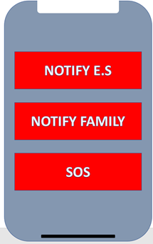
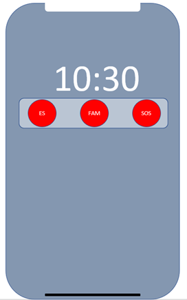

There are a great number of project ideas in my mind right now, but personally, app developing is what I am interested in at the moment. Not only does it help me build up my knowledge about coding and solving problem, but also help serve the society as well.
Overview: The project is called “SOS”. It is an application for mobile which has two interfaces, one for the emergency services (mainly for hospital and healthcare services) and one for the user. This app allows the user to call for emergency service as well as their family for many emergency cases such as a heart attack or a stroke. Moreover, the app has the GPS build in so that other family members and emergency services can locate and find the position where the help is needed. On the other hand, the emergency services’ device has the ability to receive a signal and trigger an alarm that show the location and what kind of service they need.
Motivation: CVDs or Cardiovascular diseases are the number one cost of death, and it takes to 17.9 million lives every year (WHO 2020). Furthermore, the famous comedian, actor, and singe Chi Tai has passed away recently due to a stroke and nobody was there to help or to call the emergency services even though the building was highly secure with many cameras to monitor every activity of the citizen. For that reason, this app can call for the emergency service immediately without any delay of dialling number, which can save a great amount of time because the victim only has 15 to 45 minutes or else the chance of survival is really low.
Description:
The app is quite like any ordinary apps that you would fine on Google Play or Appstore. This is a family app, which means that all the family should download so that all family member can register the app by claiming that which user is the user in the family.
Each user must register to this app to verify that they are responsible enough to use the app. If a user tries to prank call or fake an emergency incident, he or she will be fined for a reasonable amount or may have to face with the law so they have to agree with the terms and rules of this app.
When you open this app, it would lead to the user interface like Figure 1. It can be seen that there are three buttons on the screen of your phone. The first button allows you to call for the ambulance immediately, which is then transfer to a map of your current location where you can see the path of the ambulance heading to you and the path leads to the nearest hospital. The second button does not call for the ambulance, however, it triggers the alarm for all the family member who have register for the app and notify which family member is in needed of health care and show the current location of that person. The third button is for a more serious problem, it both triggers the alarm for all the family member and also call the ambulance for the victim, what is more, the app will display a screen showing where the current family members are and the current location of the ambulance.
Figure 1: example of app’s interface
There is also a shortcut to this app. There will be a always display notification function build in this app, which means that whenever a user open his or her phone, there always a notification bar that has all three buttons which server the same function as the three buttons when opening the application
Figure 1: example of app’s interface
As for the healthcare services, the application runs on a main computer which notify the healthcare services and from there, they will send or the system will automatically choose the nearest hospital and choose a path for the ambulance to arrive to the location where the help is needed.
Tools and Technologies: This app is compatible with IOS, Android, Window, and Raspberry and it always have a simple and easy to use interface for the user. However, it is necessary that the app need to be able to connect to Wi-fi or to the phone signal so that it can contact the Emergency Service and all other family member. Moreover, only phones, tablets which support GPS and Location Services can download and use this app, or else it would be impossible for the app to track down the current location of the user or the victim. To make it clearer, the app work best on smartphones and any other tablets, as long as they have a GPS system build in.
Skills required: For this project, because it is an app for all smartphones, it is very important that all team members can use Android Studio, built by Google, or some other coding language such as Kotlin or Jarva so that it is possible to develop an android app (mopinion 2020). As for IOS, team members also have to learn C or Swift so that they can successfully develop an IOS app. For IOS, it is recommended that developers use Xcode 11, which is free and has a user-friendly interface. However, we only need to focus on one software first such as Android Studio for Android or Xcode 11 for IOS, but if we want to utilize our app and make it work well with both Android and IOS, then the two software should be learned by every member.
Outcome: If we successfully develop our app, it is possible that it could help save many people, as a matter of fact, many people right now might be having trouble without the notice of the others, so not only can it safe lives, it can also notify the family members. Moreover, it is not only for healthcare services but also can be expand to many more Emergency Services such as fire department and Police Station in the future.
“First of all, I think this is a great innovation and a great idea. It is not only new to the app development industry, but also it could benefit greatly for many people. It can help save many lives and could help and raise awareness among the family member, however, there are few things that need to be fixed. First of all, this app is for smartphone, which is for younger generation, older people are the one who need this service the most, then, it should be easier to download and use so that all generation can use the most out of this app, one other thing, it should be able to connect to the SIM so that the user won’t have to download the app but still can use the service.”
Nguyen Luu Quoc Bao
“From my perspective, it is an app that can really help a lot of people, especially the elderly, however, I think that this idea can go a little bit further by not only making an app, maybe try to make a device that can all for emergency service and monitor your health at same time and predict what is your risk of having which problem. But for a start, the overview is quite clear and surely it would help prevent the rising number of incidents.”
Nguyen Dang Nhat
"Thank you for all your feedback on the project idea for our group. Overall, these feedbacks do prove out some of the shortcomings of the project idea. Moreover, these feedbacks also state the benefit of this app for both the community and for ourselves which help the daily life more healthy. As for Bao’s feedback, I agree that it should be an easier way for the elderly to install such a complicated app, for most people do not know how to use smartphone, and to fix this problem, in the near future, if the app is successfully launched, I would get the authorize from Apple and Google to have the app installed as the default app in the phone, which means that the app is automatically installed when a client buys a phone. On the other hand, I would disagree with the feedback of Nhat, because our idea is focusing on making a free app, providing a free service that everybody could use, and to make that device is clearly would cost a lot of money for the users, but what we could do is we improve the app so that it will be capable to work on smartwatches so that smartwatch can monitor the health, having daily check-up for our body."
created with
HTML Website Builder .